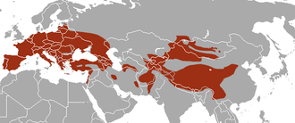
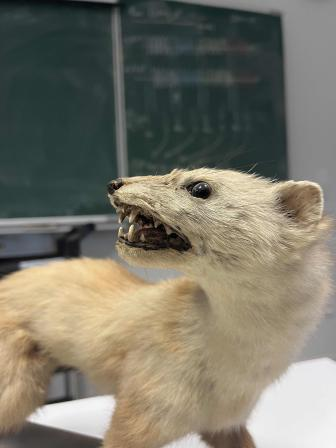
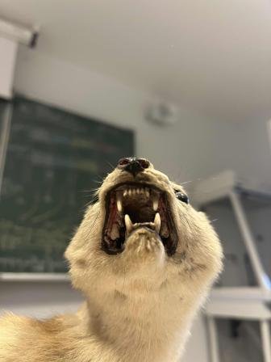

Martes foina
|
La fouine (ou Martes Foina) est un mammifère omnivore avec des préférences pour la viande, court sur patte originaire
d’Europe et d’Asie. Au pelage gris-brun, elle est principalement active la nuit.
Sa longueur varie de 40 jusqu’à 54 centimètres et possède une masse d’environ 1,6kg pour une espérance de vie de 3 à 12
ans.
|
|
||||||||||||
|  |
|
|  |
La fouine est opportuniste et se nourrit, selon les saisons, de petits mammifères, de fruits, d’oiseaux, d’œufs, de déchets
trouvés près des habitations. Mais les plus jeunes, vers les deux premières semaines de leur vie, se contentent de manger végétarien avant d'apprendre à chasser, et si la nourriture est abondante, la Fouine va accumuler la nouriture dans des réserves.
|
 |